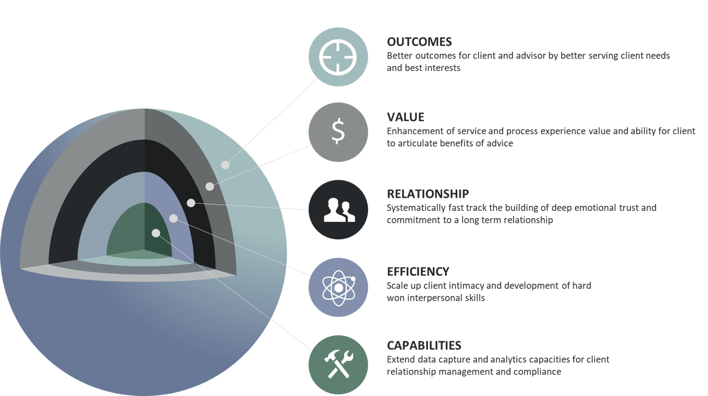
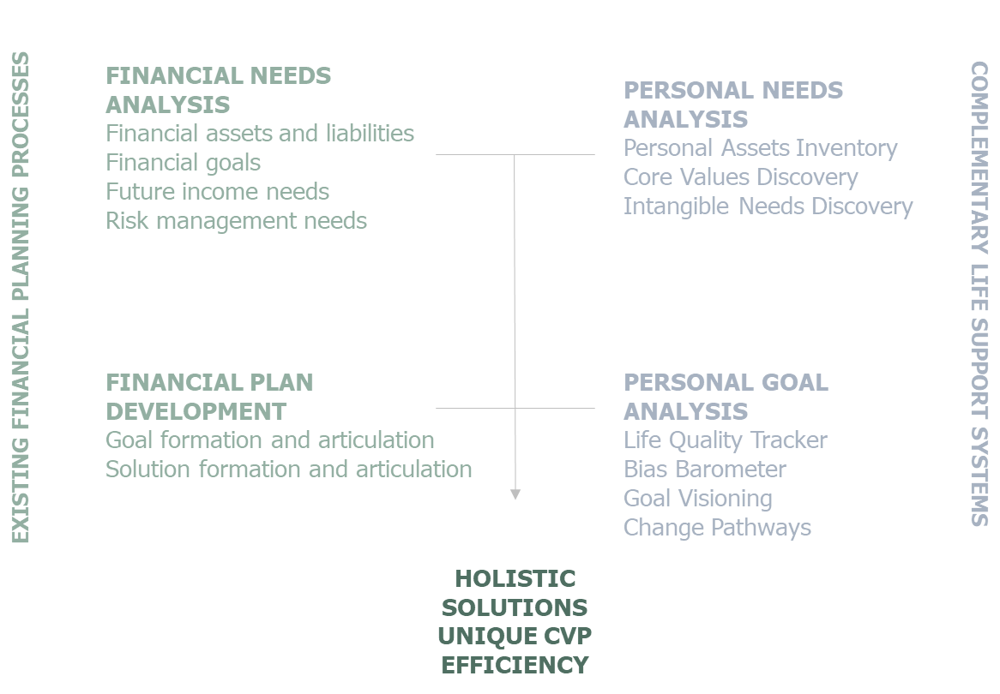
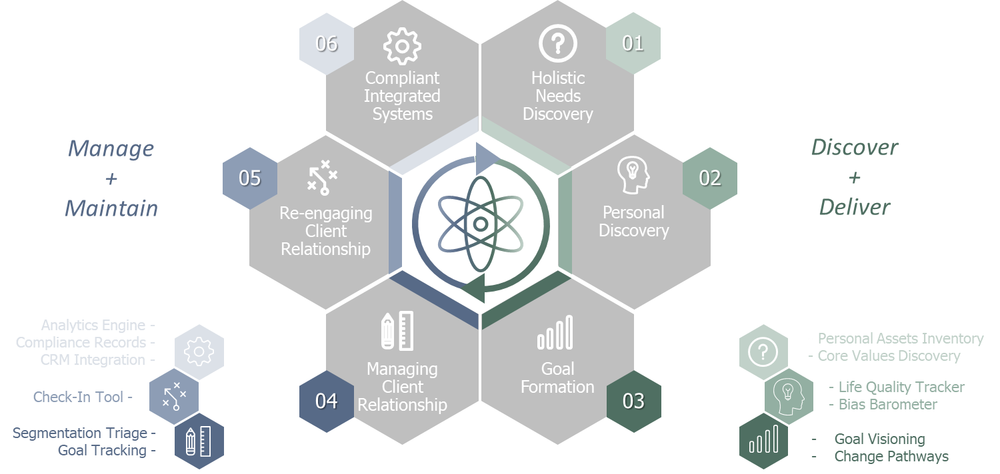
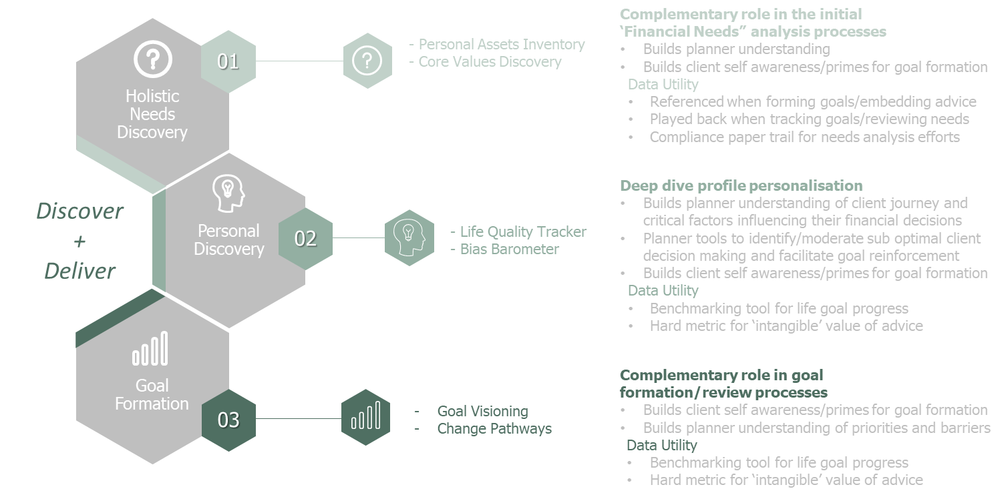
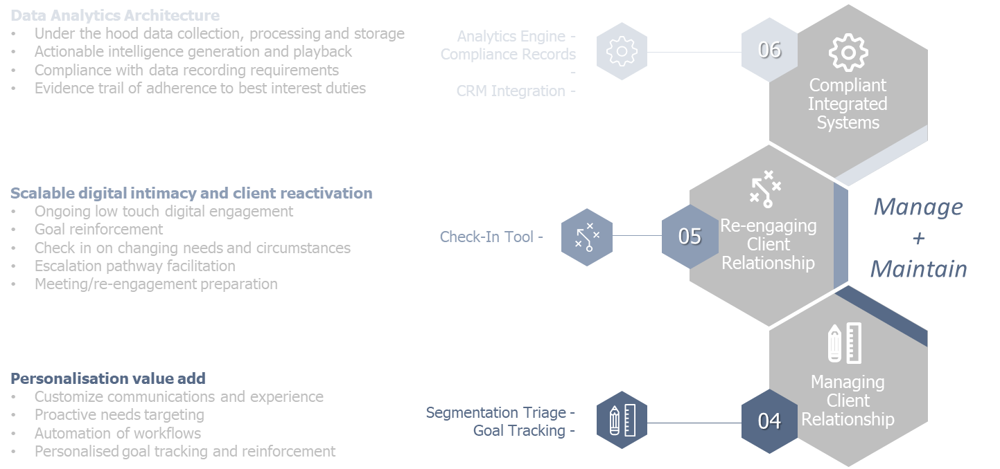

Life Support Suite Guide
Introduction
How does the Life Support Suite provide a competitve advantage for your Advisor Practice?

The Life Support Suite provides a structured complementary program and set of tools that weave into your existing advisory processes to demonstrably enhance service value and provide competitive advantage. Its win-win for the practice and your clients.
The Suite supports a ‘whole life’ approach to the provision of financial planning and advice which is becoming increasingly adopted by progressive industry leaders both overseas and here in Australia.
It facilitates and augments what great practices have already been doing. It systematically gets to the heart of why most clients seek financial advice – as a means to overcome life challenges, achieve their goals and live their best life.
The program provides valuable shared experiences between adviser and client that builds trust, articulates value, and ensures advisers are meeting their client’s greatest needs and best interests.
The Suite acts in a complementary fashion along the advisory process that tends to focus on financial needs and plan development by providing personal need and goal assessments. This allows you to tie what really matters to your clients back directly to the plan you have provided and help them adhere to it.
The Suite champions that fact that much of the value of advice can lay in the process and experience of its provision. From growing self-awareness, overcoming decision making biases, becoming empowered to act and gaining financial confidence and ultimately independence.
The suite not only provides valuable interaction experiences but also drives data collection and analytical capacity with seamless CRM integrations.
The Suite also helps develop and industrialize key soft interpersonal skills that can often otherwise require many years at the coal face to develop. It gives advisers confidence to manage the inevitable idiosyncrasies, emotional and personal needs of their clients and prospects.
The Suite design and effectiveness is supported by considerable academic research and evidenced practical application.
Where does the Life Support Suite fit in?

Specifically:
The added value of adopting a whole person and whole of life approach to encompass the many inter-connections between financial and non-financial quality-of-life influences, interests and opportunities.
These complementary support roles outside purely financial considerations….
- Earn the right to understand
- Build trust systematically
- Develop confidence in the plan
- Articulate present and tangible value of advice
- Enhance client experience and generate value from the process
- Reinforcing behavioural commitment to the plan and long term partnership
- Systematic approach to developing and delivering soft skills
- Supporting best client interests
- Measuring the difference advice makes
- Providing best interests paper trail for compliance efforts
- Drives CRM and analytic capacities
Practical Communication
The suite fosters practical communication processes and techniques which planners can use to:
- Build the depth of client rapport and trust necessary to explore a range of personal and family assets and liabilities (the foundation to becoming an on-going trusted adviser)
- To demonstrate empathy and create a sense of safety and confidentiality for clients with challenging emotional circumstances
- Lift client confidence and encourage longer-term strategic planning
- Enables advisors to be holistic financial planners rather than purely transactional investment technicians
- Focuses on a wider range of quality-of-life factors and concerns including personal health, family responsibilities and having purposeful activities to look forward to, all of which impact on quality-of-life
- Encourages a more dynamic relationship between advisor and clients
- Can be easily paired with existing software advisory programs to enable the efficient collection and tracking of key non-financial client relationship compliance data
- How to enhance/develop and maintain a true Trusted Advisor mindset
- Fast track development of a range of key ‘role skills’ e.g. reflective listener, facilitator, coach, creative problem solver, information provider and investment advisor
- Ensuring the required balance between focussing on meeting client needs while at the same time running a productive and profitable practice
The Trusted Financial Advisor
The enhanced competency support we are offering is the empathy and associated change facilitation skills. This is a key element of the Trusted Financial Advisor equation.
The LSSS aims to especially deepen and strengthen the Empathy Component of the Trusted Advisor Equation.
Trusted Advisor Equation
{kind=link}
| Symbol | Means |
|---|---|
| C | Credibility |
| R | Reliability |
| E | Empathy |
| S | Self Orientation |
Source: Maister, Green & Galford, The Trusted Advisor, Free Press NY 2000
Practical Application
Practical application of behavioural finance in advisory relationships leads to higher quality advice, especially in relation to:
- Formulating financial goals
- Maintaining a consistent approach
- Delivering what the client expects
- Ensuring mutual benefits
- Structuring suitable asset allocations
- Apply behavioural nudging to optimise outcomes
- Demonstrating tangible holistic value
This understanding can also help us optimise our communication value by taking into account different sensory mode (visual, auditory, kinaesthetic) preferences and adult learning styles. These focus on a problem to be solved and ‘doing’ rather than being educated. Process is as important as content. It is also important to provide realistic and resonating role modelling.
How might advisers put these principles into action in their day to day practice? While this may seem onerous at first there are some simple steps that weave into existing engagement touchpoints - enhancing rather than burdening them. The process involves;
- Considering how the client’s biases and life perspectives affect their risk tolerance, asset allocation preferences and assessments of ‘successful’ personal outcomes
- Considering these factors along with their articulated goals and circumstance to formulate strategies and valuable conversations that moderate and adapt accordingly i.e. behaviourally adjusted best practical asset allocation
- Adapt more to emotional biases than to cognitive biases and modify more when there is less wealth or more financial security at stake
- Use optimal option and discussion framing to assist rational best interest decision making
- Build self-awareness, financial confidence and capability to optimise ‘good life’ trajectory
The Big Picture



FAQ
A FAQ is a list of frequently asked questions (FAQs) and answers on a particular topic.